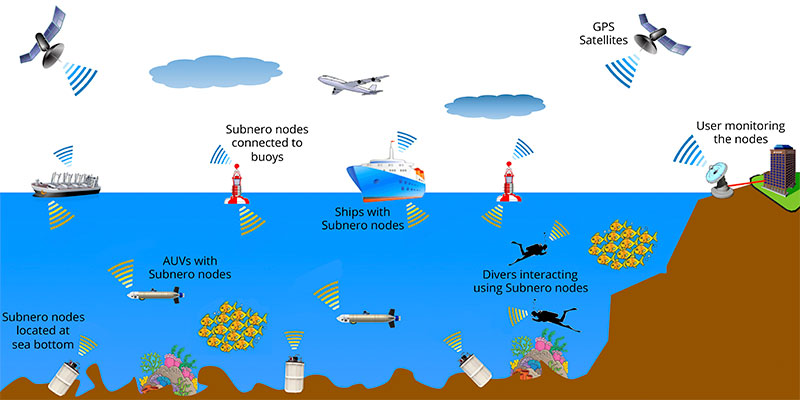
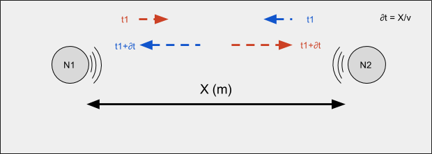

Throughput of Networks With Large Propagation Delays
background
acoustics research lab, NUSbackground
 underwater acoustic communicationintroduction
propagation delay is the amount of time it takes a communication signal to travel from the source to the destination over a given transmission medium.speeds of waves
speed of radio waves in air ~= 299792458 m/s
speed of sound waves in air ~= 343 m/s
speed of sound waves in water ~= 1500 m/s
propagation time in water

\("one-way trip takes over 1300 ms"\)
propagation delay effects...
- performance of handshaking protocols
- acknowledgment-based retransmission schemes
- transport layer protocols like TCP
- medium-access control (MAC) layer protocols which prevent data collisions
propagation delay effects...
In this paper, we demonstrate the remarkable fact that, in a wireless network with nonnegligible propagation delays, the throughput performance has the potential to be significantly better than networks with negligible propagation delays
intuitive understanding
assumptions...
- half-duplex nodes (either transmit or receive),
- fair schedules
for radio in air at 1km, ∂t = 1000/3x108 = 0.000000333 s
for sound in water at 1km, ∂t = 1000/1500 = 0.6667 s
1 packet per ∂t seconds
what if...
2 packets per ∂t seconds!
nodes to transmit simultaneously and letting their packets “cross in flight”
the packet duration equal to the propagation delay leads to a fair and optimal schedule
can this be generalized to N?
What is the maximum throughput of a network with nonzero propagation delays?
What geometries and schedules achieve this maximum throughput?
Given a network geometry, how do we determine optimal or near-optimal schedules?
system model and assumptions
- nodes in the network are half-duplex
- the network carries only unicast messages
- message transmitted by a node reaches every other node
- if two messages overlap at the receiver node, that node is unable to receive either (interference)
terms
- \(collision\) = two messages overlap at the receiver node
- \(interference\) = message received at all nodes other than destination node
- \(throughput\) = total number of bits successfully transmitted by all nodes per unit time, normalized by the link rate
definations
- \(D_{ij}\) = propagation delay between every pair of nodes
- \(N\) node network
- \(β\) (bits/s) = constant link rate of network
- information carried by a link in \(µ\) seconds = \(βµ\)
two to three
analysis..
- schedule ensures that the interference from other nodes only arrives when the node is transmitting
- let each node transmit messages of duration \(µ = a\)
- nodes can successfully transmit six messages with \(βµ\) bits each every \(T = 4µ\) seconds
- throughput, \(S = (6βµ/4µ)/β = 1.5\)
- 50% higher than the maximum throughput for a three- node network without propagation delay
it's all about the schedules!
generalisation
delay matrix
\[D = \begin{bmatrix}
0 & 1 \\
1 & 0
\end{bmatrix}\]
delay matrix
schedule matrix
\[\textbf{Q}^{(4)} = \begin{bmatrix} 2 & 3 & -3 & -2 \\ -3 & -1 & 1 & 3 \\ -2 & 1 & -1 & 2 \end{bmatrix}\]- \(Q_{jt} = i \gt 0 \Rightarrow \) node \(j\) transmits to node \(i\)
- \(Q_{jt} = -i \lt 0 \Rightarrow \) node \(j\) receives from node \(i\)
- \(Q_{jt} = 0 \Rightarrow \) node \(j\) does nothing
schedule matrix
- schedule repeats with a period, \(T \Rightarrow Q_{j,t+T} = Q_{jt} \)
- \(Q_{jt} = -i \Leftrightarrow Q_{i,t-D_{i,j}} = j \)
- schedule has equal number of transmits and receives \(\Rightarrow\)
\[ \sum\limits_{t} \sum\limits_{j} 1I(Q_{jt}^{(T)} < 0) = \sum\limits_{t} \sum\limits_{j} 1I(Q_{jt}^{(T)} > 0) \]
\[ 1I(n) = \begin{cases} 0 & \mbox{if \(n\) is \(false\) } \\ 1 & \mbox{if \(n\) is \(true\) } \end{cases} \]
schedule throughput
schedule throughput upper bound
perfect schedules
- matrix of a perfect schedule has no zero entires \( \Rightarrow\)
\[ \sum\limits_{t} \sum\limits_{j} 1I(Q_{jt} = 0) = 0 \]
- a perfect schedule acheives the N/2 upper bound
inexistance of perfect schedules
Theorem 2: For networks with odd number of nodes, perfect schedules with odd period do not exist
Corollary 3: For a network with odd number of nodes \(N\) and a periodic schedule with an odd period \(T\) the throughput is upper bounded by \( (NT - 1)/2T \)
fair schedules
Theorem 4: For an \(N\)-node network, periodic per-link fair schedules can only exist for period \(T = 2k(N-1), k \in \mathbb{Z}^+\)
linear geometry
Theorem 5: Perfect schedules do not exist for \(N\)-node linear networks for \(N > 2\)
other geometries
two node network
\[\textbf{Q}^{(4)} = \begin{bmatrix} 2 & -2 \\ 1 & -1 \end{bmatrix}\]
\(S = 3/2 = 1.5\)
equilateral triangle network
\[\textbf{Q}^{(4)} = \begin{bmatrix} 2 & 3 & -3 & -2 \\ -3 & -1 & 1 & 3 \\ -2 & 1 & -1 & 2 \end{bmatrix}\]
\(S = 3/2 = 1.5\)
isosceles triangle network
\[\textbf{Q}^{(4)} = \begin{bmatrix} 2 & -2 & -3 & 3 & -3 & 3 & 2 & -2 \\ -1 & -1 & 3 & -3 & 3 & -3 & 1 & -1 \\ -1 & 2 & 1 & 2 & -2 & -1 & -2 & -1 \end{bmatrix}\]
\(S = 3/2 = 1.5\)
4 node tetrahedron network
\[\textbf{Q}^{(4)} = \begin{bmatrix} 2 & -2 & \\ -1 & -1 & \\ -4 & 4 & \\ -3 & 3 & \end{bmatrix}\]
\(S = 4/2 = 2\)
scheduling arbitary network geometries
solving for schedule
- optimization problem as a sequential decision problem and solve it using dynamic programming
- resulting solution is optimal, but computationally infeasible
- approximate solution that reduces the computational complexity
sequential decision problem
\[\textbf{Q}^{\{t+1\}} = \Gamma (\textbf{Q}^{\{t\}}, \textbf{x}^{\{t\}} ) \]
\[\Gamma() \mbox{ is the state transition function} \]
\[\textbf{Q}^{\{t\}} \mbox{ is the paritial schedule at time } t \]
\[\textbf{x}^{\{t\}} \mbox{ is a vector of actions to be taken at time } t \]
rewards function
\[ C(\textbf{x}^{\{t\}}) = \sum\limits_{j=1}^{N} 1I(x_j^{\{t\}} > 0) \]
\[ S = \lim_{T \rightarrow \infty} \frac{1}{T} \sum\limits_{t=0}^{T} C( \textbf{x}^{\{t\}}) \]
value function
\[ X^*(\textbf{Q}) = arg \max_{x \in \chi(\textbf{Q})} ( C(\textbf{x}) + V(\Gamma(\textbf{Q, x})) ) \]
solution
using relative value iteration (iteratively estimate the value function \(V\))
resulting algorithm works in practice and yields optimal schedules for many small networks
cardinality grows very rapidly with \(N\) and \(G\)
decision space cardinality is \(\mathcal{O}(N^N)\)
improving computational efficiency
If we know the value function, the problem simplifies to enumerating the decision space and finding the optimal decision
Rather than estimate the value function iteratively, it is possible to develop an approximate value function based on the structure of the problem
improving computational efficiency
approximate value function based on an intuitive understanding of the problem
make transmission decisions such that the interference they cause overlaps as much as possible
use the interfered slots for additional transmissions
computationally efficient algorithm
sequentually select transmission decisions from all allowable transmissions
every transmission reduces the potential for future transmissions (value function approximation)
transmission that has minimum impact on the potential future transmissions is chosen
low-impact transmissions = interference largely overlaps with interference from previous transmissions
complexity = \(\mathcal{O}(N^3)\)
conclusion
conclusion
large propagation delays in underwater networks, rather than being harmful, lead to significant performance gains as compared to wireless networks with negligible propagation delays
conclusion
make interfering packets overlap in time at unintended nodes and leave desired packets are interference free at the intended node
utilize the interference laden time slots for transmission
upper bound on the throughput of a large propagation delay network of \(N\) nodes is \(N/2\)